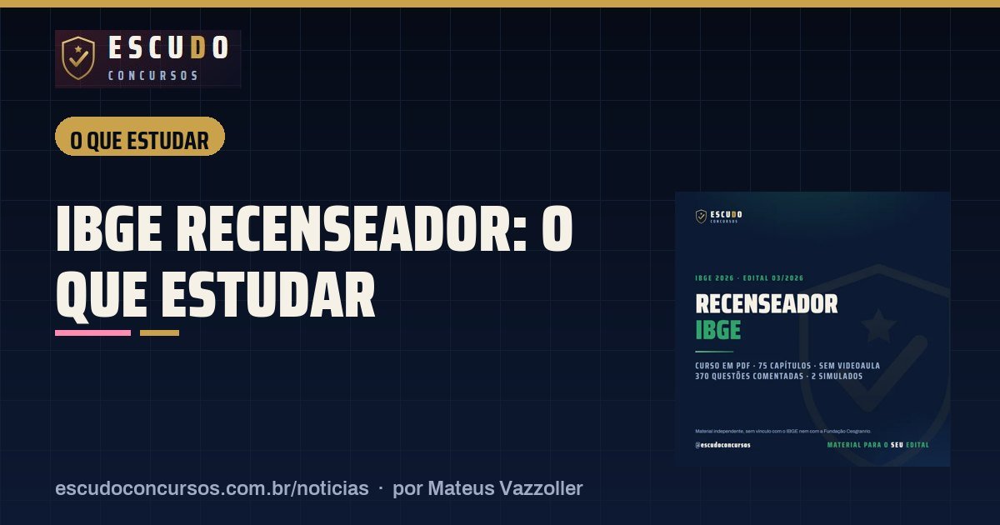

IBGE Recenseador: o que estudar para a prova da Cesgranrio, com metade dos pontos na apostila do Censo Agro
O que estudarPublicado em 17 de novembro de 2026 · por Mateus Vazzoller, ESCUDO Concursos

Na prova de Recenseador do IBGE, marcada para 31/01/2027, metade dos pontos vem de um só lugar: os 30 itens de Conhecimentos Técnicos saem da apostila do 12º Censo Agropecuário, Florestal e Aquícola indicada no Edital nº 03/2026. As outras 30 questões se dividem entre Língua Portuguesa e Matemática, 15 para cada. Quem quer vestir o colete do IBGE e bater na porteira dos estabelecimentos agropecuários do seu município deve, portanto, começar pela apostila e só depois cuidar do resto.
| Órgão | IBGE, 12º Censo Agropecuário, Florestal e Aquícola |
|---|---|
| Banca | Fundação Cesgranrio |
| Vagas | 27.279, ensino fundamental |
| Inscrições | até 25/11/2026, taxa de R$ 70,00 paga até 27/11/2026 |
| Prova | 31/01/2027, das 13h às 17h, 60 questões |
| Aprovação | 18 pontos no total e pelo menos 1 em cada disciplina |
Por que a apostila do Censo vale mais que o resto?
São 30 das 60 questões, e a maior nota em Conhecimentos Técnicos é também o primeiro critério técnico de desempate, logo depois da regra da idade de 60 anos. Ao contrário de Português e Matemática, aqui o conteúdo é fechado: tudo o que pode cair está escrito na apostila que a Cesgranrio disponibiliza no seu site. Isso favorece quem lê com atenção e decora definições, não quem tem mais anos de estudo.
Quais temas da apostila estudar?
A apostila do mesmo Censo Agro usada em setembro na seleção de agentes e supervisores tinha os temas abaixo. Confira a versão indicada pela Cesgranrio para o Recenseador, que é a que vale, e use a tabela como roteiro de leitura.
| Bloco | Temas | O que fixar |
|---|---|---|
| A instituição | O IBGE, o Censo Agropecuário e o 12º Censo | Para que serve o Censo e o que ele investiga |
| A operação | Estrutura organizacional censitária e funções | O papel do Recenseador e de quem está acima dele |
| As ferramentas | Dispositivo Móvel de Coleta (DMC) e navegação em campo | Como o trabalho é registrado e conduzido no setor |
| O território | Divisão político-administrativa, estruturas territoriais, territórios de povos e comunidades tradicionais | A diferença entre cada recorte do território |
| A localização | Endereço e coordenadas geográficas | Onde se registra a sede do estabelecimento |
| O objeto | Estabelecimento agropecuário, produtores sem área e situações especiais | O que conta e o que não conta como estabelecimento |
O último bloco merece a maior parte do tempo. É nele que ficam os casos de fronteira, e a Cesgranrio costuma montar as alternativas erradas com conceitos vizinhos ao correto.
O que cortar se você estudou pelo edital de 2021?
Muita gente começou a estudar pelo processo seletivo do Censo 2022, da FGV. A prova de agora é outra:
| Item | Censo 2022 (FGV, edital de 2021) | Censo Agro (Cesgranrio, Edital nº 03/2026) |
|---|---|---|
| Questões | 50 | 60 |
| Nota mínima | 15 pontos | 18 pontos |
| Ética no Serviço Público e Lei 8.112 | Cobradas | Fora do Anexo III |
| Conhecimentos Técnicos | Apostila do Censo Demográfico | Apostila do 12º Censo Agro, 30 questões |
Ética e a Lei 8.112 saem do plano. A apostila do Censo de 2022 também não serve: os conceitos de agora são os do Censo Agro, centrados no estabelecimento agropecuário.
E Português e Matemática?
São 15 questões cada, e basta 1 ponto em cada uma para não ser eliminado. Mas os 18 pontos de corte e a classificação dentro das vagas da sua área de trabalho pedem mais do que isso. Em Matemática, dê prioridade ao que conversa com o trabalho de campo e aparece no Anexo III: porcentagem, regra de três, unidades de medida de superfície, áreas e perímetros, leitura de tabelas e gráficos e leitura de mapas, croquis e esquemas. Em Português, interpretação de texto primeiro, depois concordância, regência e pontuação.
Como dividir a semana?
| Disciplina | Questões | Horas por semana (plano de 10h) |
|---|---|---|
| Conhecimentos Técnicos | 30 | 5h |
| Matemática | 15 | 2h30 |
| Língua Portuguesa | 15 | 2h30 |
| Total | 60 | 10h |
Leia a apostila inteira uma vez nas duas primeiras semanas e depois volte a ela por blocos, sempre com questões. Antes da prova, faça ao menos um simulado de 60 questões em 4 horas, começando às 13h, como no dia.
O curso ESCUDO Recenseador IBGE 2026 em PDF dedica 31 dos 75 capítulos aos Conhecimentos Técnicos, na ordem da apostila, e traz 2 simulados de 60 questões na divisão do edital.
Curso ESCUDO Recenseador IBGE (12º Censo Agro) em PDF: 75 capítulos e 370 questões, de acordo com o edital, 2 simulados de 60 questões no formato da prova. R$ 29,90.
Ver o curso
Perguntas frequentes
O que mais cai na prova de Recenseador do IBGE?
Conhecimentos Técnicos, com 30 das 60 questões, tirados da apostila do 12º Censo Agropecuário, Florestal e Aquícola. Português e Matemática têm 15 questões cada.
Precisa estudar Ética e Lei 8.112 para Recenseador do IBGE?
Não. O Anexo III do Edital nº 03/2026 traz só Língua Portuguesa, Matemática e Conhecimentos Técnicos. Ética caiu no processo do Censo 2022, não neste.
Onde está a apostila de Conhecimentos Técnicos?
O edital indica o documento sobre os conhecimentos técnicos do 12º Censo Agropecuário, Florestal e Aquícola, disponibilizado no site da Fundação Cesgranrio.
Leia também
- O que estudarO que faz o Técnico Bancário do Banestes: as 24 atribuições do edital e o que elas cobram na prova da FCC
25 de novembro de 2026 · As 24 atribuições do Técnico Bancário do Banestes no edital, a jornada de 30 horas, o salário de R$ 4.552,43 e o que cada tarefa do cargo cobra na prova da FCC.
- NotíciaIBGE Recenseador: inscrições e pedido de isenção terminam quarta-feira, 25/11, e a taxa vence na sexta, 27/11
23 de novembro de 2026 · Seleção do IBGE para Recenseador do Censo Agro: inscrições e pedido de isenção terminam em 25/11/2026, às 23h59. Taxa de R$ 70,00 paga até 27/11.
- O que estudarPC-PE Agente: o que estudar pelo peso de cada bloco na prova do Cebraspe
19 de novembro de 2026 · PC-PE Agente: como os 90 pontos se dividem entre Direito, Conhecimentos Específicos e redação, quanto cada matéria pesou em 2023 e 15 horas por semana.
Guia completo do concurso: edital, vagas e o que cai · Mais notícias e dicas de concursos